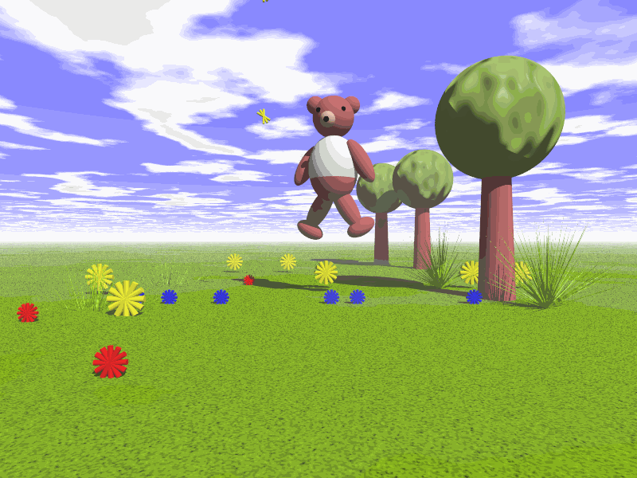

Coś o mnie
Moje podróże
Strzelectwo sportowe
Grafika komputerowa
Moja pierwsza przygoda z grafiką komputerową rozpoczęła się od nauki programowania w programie PovRay. Program ten tworzy obrazy z użyciem ray tracingu przy użyciu własnego języka programowania.
